Chapter 3 Data Visualisation 2
In this section we’ll cover more advanced plotting methods in ggplot2. We’ll look at customising plots, making pirate plots, installing packages from GitHub, faceting, and stitching plots together.
To get started, as always we’ll load our packages and saved data from the previous lesson.
library(tidyverse)rt_data <- read_csv("inputs/rt_data.csv")3.1 Customising Your Plots
Take the desnity plot below, this is functional, but it’s pretty ugly.
ggplot(data = rt_data,
mapping = aes(x = reaction_time,
fill = response_condition
)
) +
geom_density(alpha = 0.5)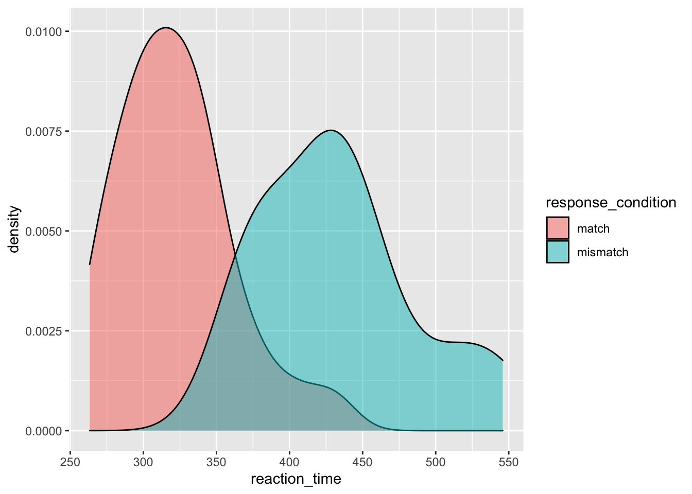
You already know how to change the colours of your aesthetics across all conditions and split by condition, so now we’ll look at other ways to improve the plot.
In this version of the plot, we use the same code as before, but we add labels to the axes using labs(), assigning a nicer looking version of our variables to the x and y axes.
Additionally, we change the scale of the x-axis using the scale_x_continuous function. To this function, we pass the limits that we want for our axis (between 200 and 600ms), and we identify the breaks, or where we want the ticks along the axis. We pass another function that we learned in the Lesson One, called seq(). This sets up a sequence of numbers for us without us having to type them all out. Here, it goes from 200 to 600 by ticks every 100ms; as a result, our axis gets labels of 200, 300, 400, 500, and 600.
On top of this, we also improved the label for our legend using the guides() function. As our legend is only there to identify different parts of the graph with a different colour (from fill = response_condition in aes()), then we have to tell the guide to change the legend that pops up because of the differnt coloured parts of the plot. So, we change our guide, and change the legend that comes up because of the change in colour (guides(fill = guide_legend())) and within the guide legend, we change the title (title = "Response Condition". I know this sounds like a lot to take in, and you’re very likely to forget how this works (I do all the time), but hopefully you can get a grip of it by seeing it in action.
Finally, we’ve changed the theme of our plot to theme_bw(). This is one of many inbuilt themes in ggplot2, but I find it one of the cleanest.
ggplot(data = rt_data,
mapping = aes(x = reaction_time,
fill = response_condition
)
) +
geom_density(alpha = 0.5) +
labs(x = "Reaction Time (ms)",
y = "Density"
) +
scale_x_continuous(limits = c(200, 600),
breaks = seq(from = 200,
to = 600,
by = 100
)
) +
guides(fill = guide_legend(title = "Response Condition")) +
theme_bw()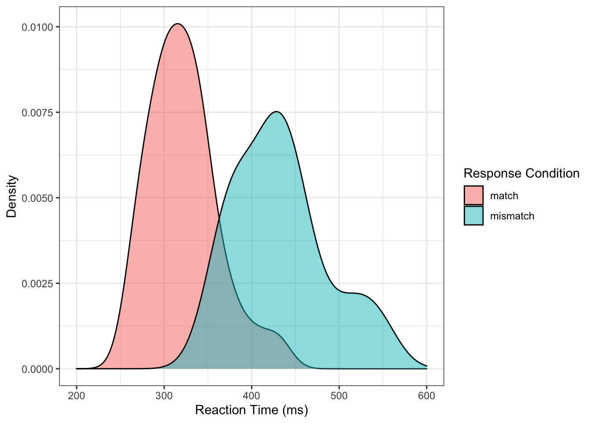
With the histrogram below, we don’t have much new to introduce, expect this time we use theme_classic() instead of theme_bw(). This gets rid of the major and minor grid lines from the previous plot, and also keeps only the lines for the axes. However, we added the argument expand to the scale_y_continuous() function, and pass this the values 0 and 0. This makes removes the spacing between the plotted elements and the axes. These values simply indicate how much extra space should be added to the top and bottom of the plot.
ggplot(data = rt_data,
mapping = aes(x = reaction_time)) +
geom_histogram(binwidth = 50,
fill = "#bcbddc",
colour = "#756bb1"
) +
scale_x_continuous(limits = c(200, 600),
breaks = seq(from = 200,
to = 600,
by = 25
)
) +
scale_y_continuous(expand = c(0, 0)) +
labs(x = "Reaction Time (ms)", y = "Count") +
theme_classic()## Warning: Removed 2 rows containing missing values (geom_bar).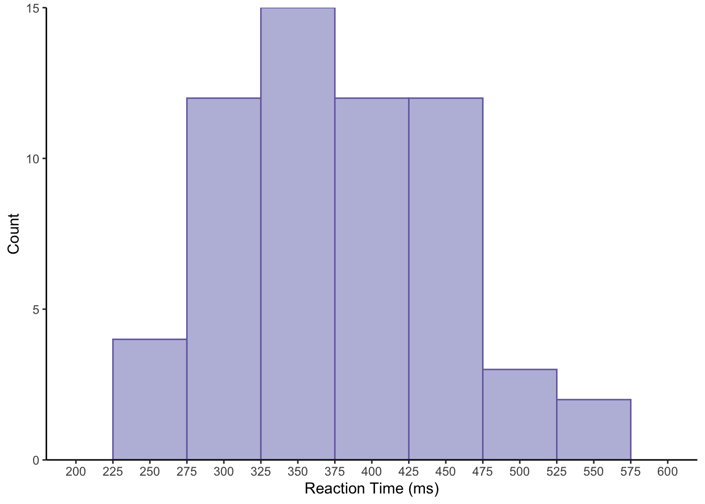
3.2 Pirate Plots
Now we’ll look at a new plot type that takes a bit of extra work to generate; pirate plots. Pirate plots are a great choice of plot for the indecisive. They are essentially the individual points of data, a bar plot, a violin plot, and a confidence interval interval all in one. This way, you get to see the raw, descriptive, and inferential data on one plot!
This is a nice way to show data that are grouped by categories but with a continuous dependent variable.
We could make these ourselves by doing some calculations and combining geoms in ggplot2. Or, we could just install a package from Github which will do that for us. First, we’ll have to install devtools in R which will allow us to install packages from Github. (For packages on CRAN, this isn’t necessary, but unfortunately ggpirate isn’t on CRAN at the time of writing.)
To install devtools and the ggpirate package, uncomment and run the code below. Then as always, use library(ggpirate) to load the package.
# install.packages("devtools")
# devtools::install_github("mikabr/ggpirate")
library(ggpirate)Below, we’ll make a pirate plot. Note that you only need the first two calls (lines 1-6) to create the plot: The first to set up how you’re going to map your data (and the source of your data), and the second to add the geom for the pirate plot itself. We added the aethetics of colour and fill to match our conditions within this call, so the two levels of response_condition have different colours.
For the additional lines:
labsallows you to manually change the x and y axis labelsscale_x_discreteallows you to manipulate your x scale. Within this, we change the labels of the columns usinglabels. We changed them to Impaired (vs. impaired) and Intact (vs. intact) for stylisitc reasons.scale_y_continuousallows you to manipulate your y scale. Here, we set thelimits, i.e. how far to extend our y-axis to between 0 and 600ms. Additionally, we set ourbreaksto increment in the sequence (seq) from 0 to 600 by 100ms. This way, we’ve added more granularity to our axis ticks.- We use
theme_bw()to change to a black and white theme. There are other themes in ggplot2, but this one is nice and clean. - Next,
themeallows you to manually specify other aspects of how your plot should look. Here, we usedpanel.grid.major.xand set this to nothing (element_blank()) because we don’t need vertical lines in our plot. - Finally, we define the colour and fill for our plot using manual hex values using the
scale_colour_manual()andscale_fill_manual()functions.
ggplot(data = rt_data,
mapping = aes(x = response_condition,
y = reaction_time,
colour = response_condition,
fill = response_condition)
) +
geom_pirate() +
labs(x = "Motor Skill", y = "Reaction Time (ms)") +
scale_x_discrete(labels = c("Impaired", "Intact")) +
scale_y_continuous(limits = c(0, 600),
breaks = seq(from = 0, to = 600, by = 100)
) +
theme_bw() +
theme(panel.grid.major.x = element_blank()) +
scale_colour_manual(values = c("#af8dc3", "#7fbf7b")) +
scale_fill_manual(values = c("#af8dc3", "#7fbf7b"))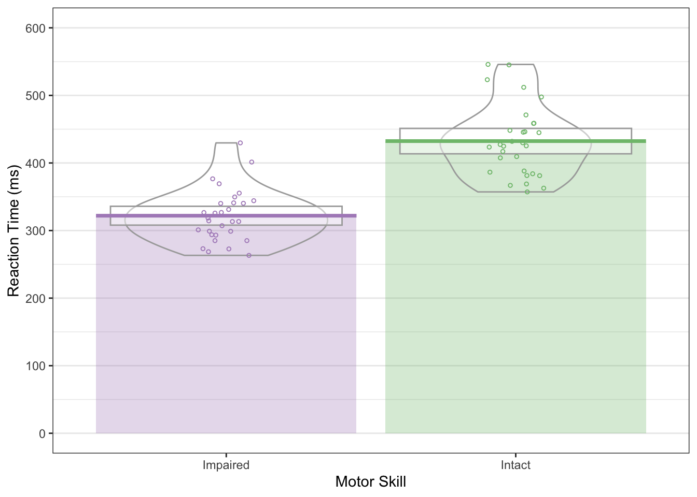
In this plot, we have coloured bars and lines indicating the mean scores, a box representing the 95% confidence interval assuming a normal sampling distribution, violins indicating density, and the raw data points.
If the 95% confidence interval between the two groups doesn’t overlap, we can be fairly sure there is a significant difference between the groups. So, here we can be fairly certain the two groups differ in reaction times.
3.3 Faceting
Another useful part of plotting in ggplot2 is that you can make facets of plots, or subplots. This is a good way to display your data if you have multiple categorical variables. Essentially, you’ll get a plot for each category in your data.
3.3.1 Facet Wrap
If you want to create facets from one variable then use facet_wrap().
ggplot(data = rt_data, mapping = aes(x = reaction_time)) +
geom_histogram(binwidth = 50,
fill = "white",
colour = "black"
) +
facet_wrap(~ response_condition)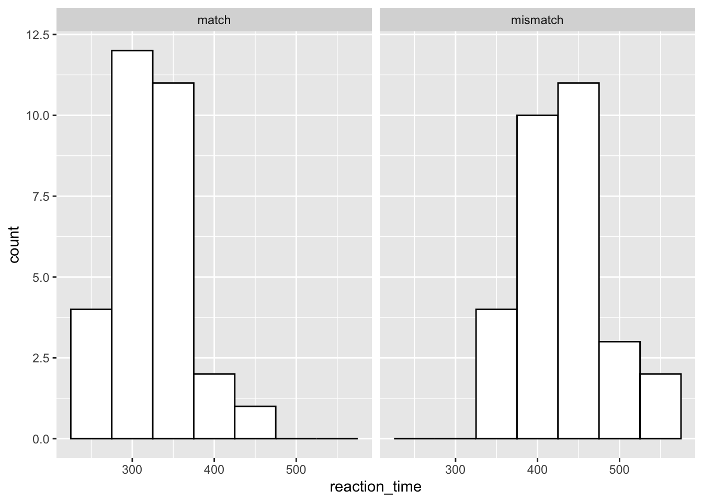
In this plot, we’ve specified a histogram as we normally would. However, we use facet_wrap() and a tilde (~) to create a formula for how to display our plots. We define our variable with which to split our plots to the right of the ~, and ggplot automatically plots the two separately at the same time. Notice that we get useful labels at the top of these plots, too.
3.3.2 Facet Grid
If we wanted to make a facet by two variables, then we would use facet_grid() instead. In this case, we just add each variable to either side of the ~ and ggplot will do the splitting for us.
Let’s see how this works if we split our data by gender and response condition.
ggplot(data = rt_data, mapping = aes(x = reaction_time)) +
geom_histogram(binwidth = 50,
fill = "white",
colour = "black"
) +
facet_grid(gender ~ response_condition)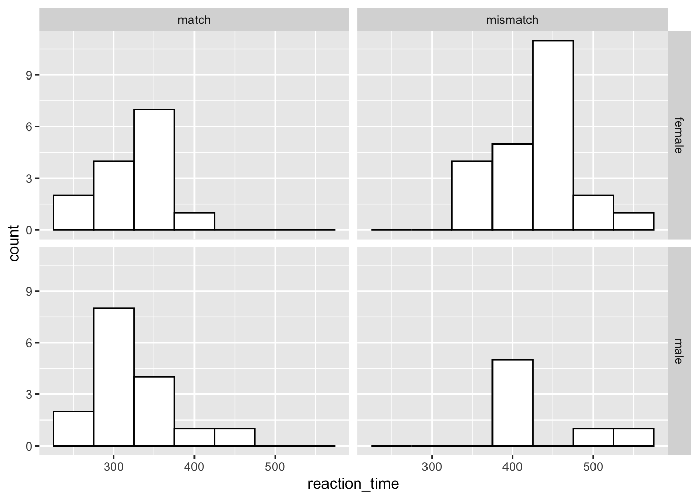
The order in which you specify the two variables matters. Try swapping around between facet_wrap(gender ~ response_condition) and facet_wrap(response_condition ~ gender) to see how this works.
3.4 Calculating Statisitcs in ggplot2
Sometimes, plotting just the means isn’t enough. We saw how useful the 95% confidence interval from ggpirate is for making inferences about the differences between groups. Nicely, we can get standard errors or confidence intervals around our data points within ggplot for other geoms.
3.4.1 Means and Error Bars
Let’s say you wanted a bar plot with error bars showing the standard error. You can create this in ggplot using the stat_summary() function. In the first instance here, we tell it that we want to run the function mean over our data that make up the y-axis; hence fun.y = mean. We also need to specify which geom we want to return from this.
Try changing the geom to point in the first stat_summary() call to see what happens when you run this plot with geom = "point".
Finally, we ask for another summary, but this time we want an error bar. So, for the geom call we request an error bar. Crucially, the function we require to get this errorbar is fun.data = "mean_se". That’s because we need the mean to know where the centre the errorbar, and the standard error to get the limits of the bar. We manually changed the width of the bar to a quarter of the bar size using the width argument to stop ggplot returning super wide error bars.
ggplot(data = rt_data,
mapping = aes(
x = response_condition,
y = reaction_time,
fill = response_condition
)
) +
stat_summary(fun.y = "mean", geom = "bar") +
stat_summary(fun.data = "mean_se", geom = "errorbar", width = 0.25)## Warning: `fun.y` is deprecated. Use `fun` instead.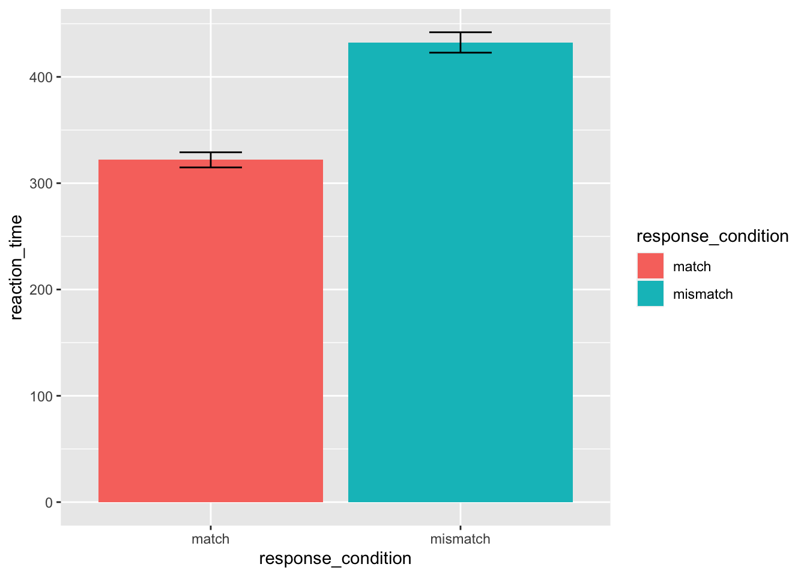
I don’t often use stat_summary in my own plots, as I often want to know exactly how I’ve calculated things like the standard error. Doing things by hand allows you to change error bar sizes appropriately for within- and between-subject designs. But, this is useful if you want to create a plot rapidly, or want to avoid the hassle of writing extra code.
3.4.2 Model Fits
Here’ we’ll switch again to a different data set that has two continuous variables. The starwars data set is useful for this exercise.
We can use the geom_smooth() function to fit a model to our data. This defaults to a loess method, but we can change this to a linear model (or other alternatives) as in the second plot below. By default, these smoothed plots display a ribbon around the fit which indicates the confidence interval (95% by default).
# remove NA and mass above 1000
filtered_starwars <- starwars %>%
drop_na(height, mass) %>%
filter(mass < 1000)
# plot
ggplot(data = filtered_starwars,
mapping = aes(x = mass, y = height)
) +
geom_point() +
geom_smooth()## `geom_smooth()` using method = 'loess' and formula 'y ~ x'Next, we’ll change the defaults in order to fit a linear model. We do this in the geom_smooth function, method = "lm". We can additionally specify a function, so we can change how we fit the data. Currently, our formula is y ~ x, which is a regular linear model. We could, however, fit a quadratic function to the data by using y ~ poly(x, 2). The function poly(x, 2) calculates orthogonal polynomials to a certain degree. The first being linear, second quadratic (think curved lines with 1 inflection point), the third cubic (think curved lines with 2 inflection points), etc.. For now, we’ll just fit the linear model.
ggplot(data = filtered_starwars,
mapping = aes(x = mass, y = height)
) +
geom_point() +
geom_smooth(method = 'lm', formula = y ~ x)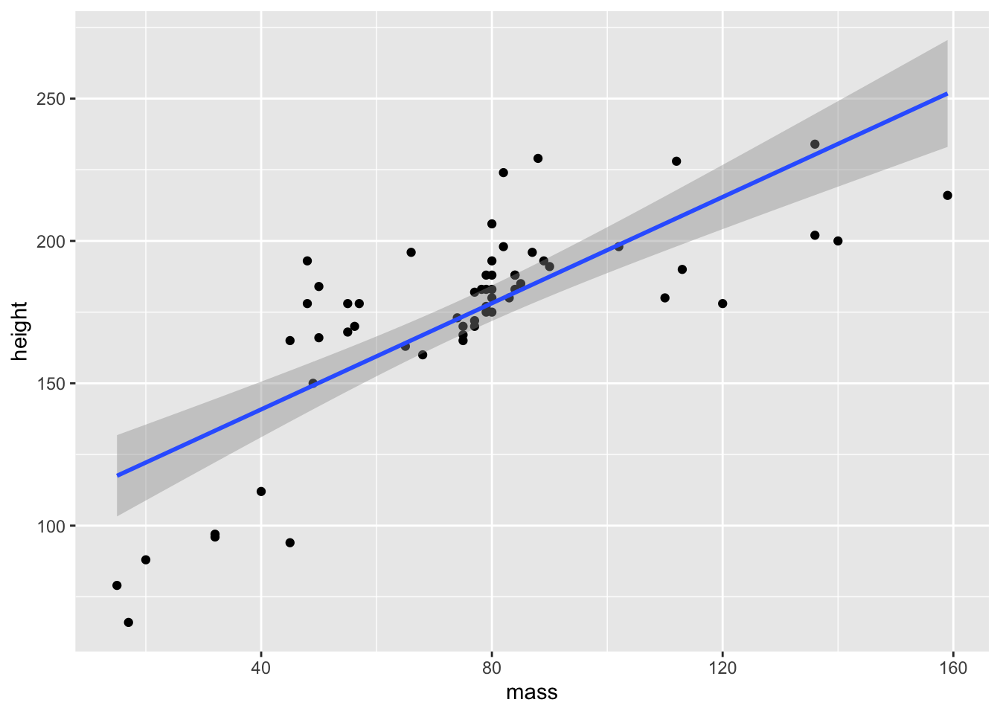
Alternatively, if we have a fitted model saved from our analyses, we can add the fitted line directly using the stat_summary function. However, this requires some insight into the models fitted, so we’ll save this for later classes.
Finally, we’ll look at how we can combine these smoothed fits with averages of scores. This is often useful if you’re looking at timecourse data and you want to summarise performance across a whole range of participants. We’ll also look at adding a few of the graphical flourishes from above to make the plot look really nice.
Next, we’ll look at making the point and line points look a little better. For this, we’ll use the inbuilt ChickWeight data set from R. This is similar to the chickwts data set from the previous session, but crucially this data is not aggregaged across time. Instead, we have several measurements for the chicks at different time points. This makes this data especially nice for plotting changes over time in our sample.
First, load the data.
data(ChickWeight)Then we can see how the data looks. This data is stored as a data.frame, so we have to be careful when printing it out. We’ll use the head() function to get only the first 6 rows of data.
head(ChickWeight)## Grouped Data: weight ~ Time | Chick
## weight Time Chick Diet
## 1 42 0 1 1
## 2 51 2 1 1
## 3 59 4 1 1
## 4 64 6 1 1
## 5 76 8 1 1
## 6 93 10 1 1We have 4 columns:
- weight: out dependent variable, the weight of the chicks
- Time: an independent variable indicating the time point at which a measurement was taken
- Chick: an ID column for each chick
- Diet: an independent variable indicating the diet of the chick
Unfortuantely, we only know that there are different diets from the data set, but not what those diets are. We also don’t know the units by which weight is measured or by which the measurements were taken.
This is a good lesson in using sensible variable names. If you want yourself and others to understand your data years down the line with little background knowledge of your study, then use informative labels for your data!
We’d expect that as time goes on, chick weights should increase. Also, we might expect that the rate of growth should differ for each diet. As such, we’ll plot this together using our data set.
First, we’ll plot our chick data, using the stat_summary() function to plot some mean points for the chick weights, and the geom_smooth() function to fit a linear model to the data. We’ll make sure that the points, lines, and ribbons (indicating the confidence interval) are different colours for each level of the diet factor.
We’re going to build up our plot bit by bit, so this time we can same our plot as an object, before returning the object to see the plot.
chick_time_plot <- ggplot(data = ChickWeight, # data
mapping = aes(x = Time, # x-axis
y = weight, # y-axis
colour = Diet, # colour ID
fill = Diet # fill ID
)
) +
stat_summary(fun.y = mean, geom = "point") + # point means
geom_smooth(method = 'lm', formula = y ~ x) # linear fit## Warning: `fun.y` is deprecated. Use `fun` instead.# return the plot
chick_time_plot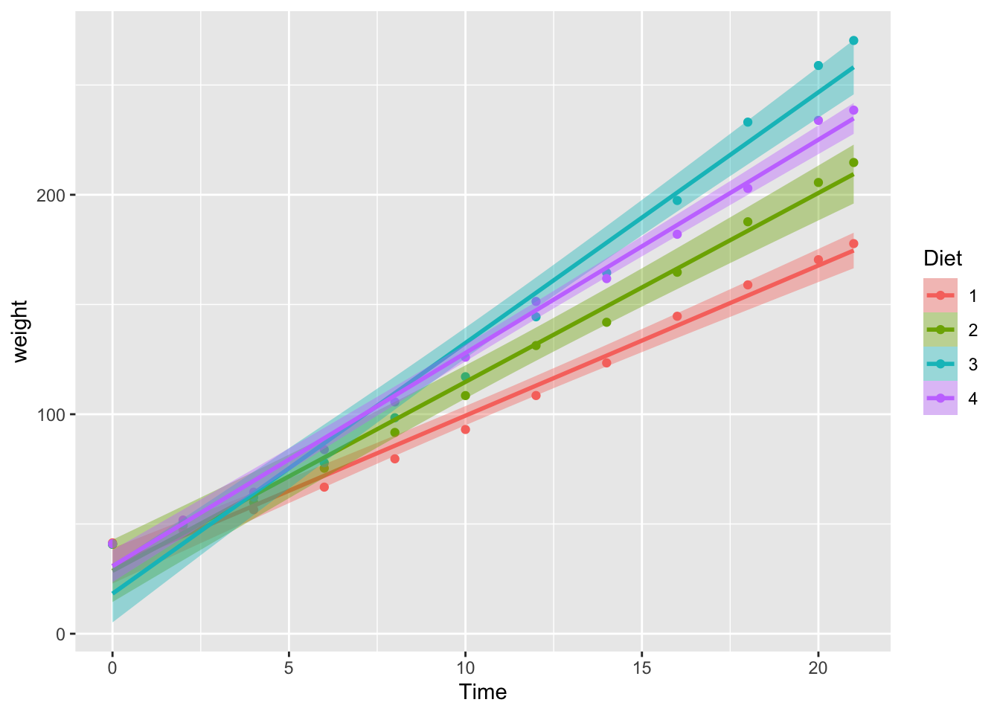
We can improve this plot. So, let’s add some further information. What if we had a target weight we’d like our chickens to reach over time, and we want to see when each diet pushes chicks over this line?
We can add this information by including a horizontal line using geom_hline(). We just need to specify where on the y-axis this line should go (yintercept), and which style we want for the line (linetype). We should also add an annotation to the line indicating what it represents. We can do this by using the annotate function, and specifying that we want a text geom. We need to specify the x and y values for where the text lies, and what the text should say.
To add this to our original plot, we’ll overwrite the original plot name with itself, plus our additional arguments.
chick_time_plot <- chick_time_plot +
geom_hline(yintercept = 150, linetype = 2) + # horizontal line
annotate(geom = "text", x = 2, y = 158, label = "Target Weight") # line label
# return the plot
chick_time_plot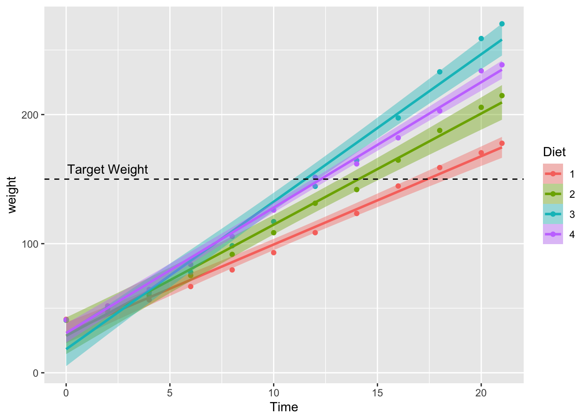
Finally, we can improve the general look of the plot by adding some additional arguments. We’ll specify the labels for the x and y axes using the labs() function.
We’ll also specify the limits of the y-axis using the coord_cartesian() function and specifying the minimum and maximum values for the limits of the y-axis.
Next, we’ll specify a general basic theme for the plot using the theme_bw() argument. We’ll change a minor detail of this theme, namely the position and style of the legend by specifying additional theme() arguments. This has to come after theme_bw() so theme_bw() doesn’t overwrite our additional arguments. First, we simply state the x and y locations for the legend by defining the legend.position. Next, we want a black border around our legend, so we do this by changing the legend.background. Here, we set colour (the outline) to black, with a relatively small line size (1), and a solid linetype.
Finally, we can change the title of our legend if we’d like. The original title is quite informative, but it’s useful to know how to do this. Here, we use the guides function, and specify both the guide legend title using guide_legend() for both the colour and fill properties. It’s important to do this for both properties as our data is identified by colours on both of these properties. If we just change the title of one of the properties (e.g. fill), then we’ll have two legends!
chick_time_plot <- chick_time_plot +
labs(x = "Trial", y = "Weight") + # axis labels
coord_cartesian(ylim = c(0, 300)) + # range of y-axis
theme_bw() + # general theme
theme(legend.position = c(x = 0.15, y = 0.8), # position of legend
legend.background = element_rect(color = "black",
size = 1,
linetype = "solid"
) # legend styling
) +
guides(colour = guide_legend("Experimental Diet"),
fill = guide_legend("Experimental Diet")
) # legend title
# return the plot
chick_time_plot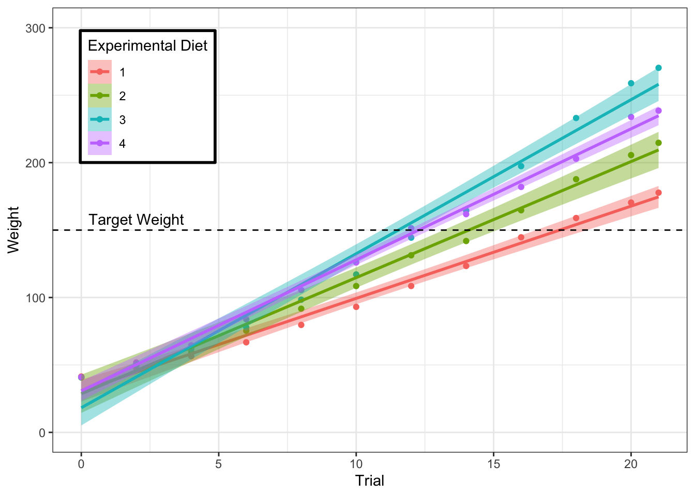
3.5 Combining Plots
Finally, while it’s all well and good plotting one model at a time, often if you’re writing a paper you want several plots together to save space. You could do this by hand in certain image editing packages, but luckily there’s a package for this on CRAN; cowplot. First, we need to install and load the package. Intall this by running the commented out code below. After that, load cowplot each time you want to use it.
# install.packages("cowplot")
library(cowplot) # run this each timeIn order to stitch two plots together, we need to save our plots as objects so they’re available to the R environment. This is the same process we used above for the ChickWeight plots.
If we assign our plotting code to an object, then every time we run the name of the object, we’ll get the output of that code back.
For keeping several plots in my environemnt at once, I often save them to an object. In this instance, we’ll save a plot of just the points to the name point_plot. That’s because we want to overlay a linear fit and a quadratic fit on this plot separately, but we don’t want to type the full code out twice. Instead, we fit the plot of points to point_plot, then add a linear or quadratic fit by adding the geom_smooth argument to point_plot and saving both under new names. We can do this like so:
# create a plot of points
point_plot <- ggplot(data = filtered_starwars,
mapping = aes(x = mass, y = height)
) +
geom_point() +
coord_cartesian(ylim = c(0, 300))
# create a linear plot by adding the fit to the plot of points
linear_plot <- point_plot +
geom_smooth(method = 'lm', formula = y ~ x)When you do this, you won’t automatically see the plot once you run the code unless you run the object assigned to the plot. Let’s try this for a quadratic fit of the same data.
# create a quadratic plot by adding the fit to the plot of points
quadratic_plot <- point_plot +
geom_smooth(method = 'lm', formula = y ~ poly(x, 2)) # fit quadratic
# return the plot
quadratic_plot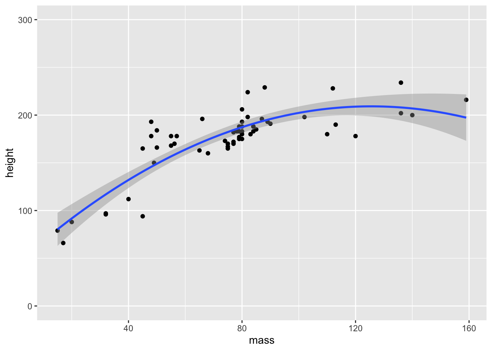
You can see that we’ve got the quadratic fit and the 95% confidence interval around this fit from the above code. Why does the plot look different to the base plots in ggplot2? cowplot loads some defaults for all plots outputted by ggplot to save you on typing out your own theme arguments.
Now, we can combine these two plots into a single plot using the new functionalities from cowplot.
combined_plots <- plot_grid(linear_plot,
quadratic_plot,
labels = c("A", "B"), # label plots
align = "h" # align axes
)
combined_plots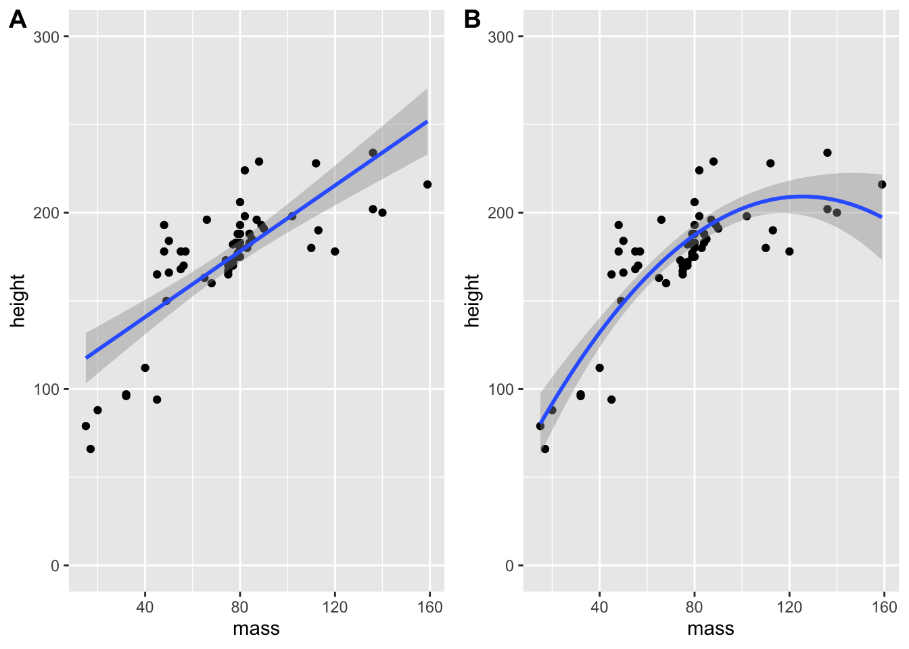
What if we want a title for our plots? We first have to define our title with a combination of ggdraw() and draw_label(). Inside draw_label() we used a new function, paste() to paste two strings of text together (with a space between the two strings). We could simply input the entire string, but we broke it down into two bits so we don’t exceed the 80 character width limit from our style guide!
We further specify a bold fontface in the draw_label() command outside our pasted title.
Finally, we display the plot by creating a plot_grid() of our plot and the title in this order so the title displays underneath the plot. We specify that we just want 1 column so the plot and title are stacked together, and we specify the relative heights of the title and plot separately so that the title is smaller than the plot so it doesn’t take up an equal amount of space as the plot.
# create title
title <- ggdraw() +
draw_label(paste("Linear (A) and Quadratic",
"(B) fits of Height and Weight"
),
fontface = "bold"
)
# print plot as a grid
combined_plots <- plot_grid(combined_plots,
title,
ncol = 1,
rel_heights = c(1, 0.1)
)
# return the combined plots
combined_plots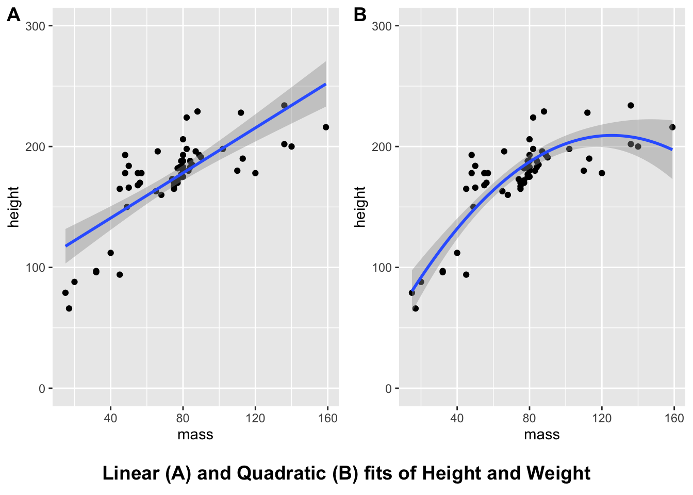
You can find further information on adding joint titles, annotations, etc. in this article by Claus O. Wilke.
Note that you can reset the the default styles inherited by cowplot so that your plots return to their defaults with the following code:
theme_set(theme_gray())3.6 Saving Plots
Finally, if you’ve went to the work of producing a nice plot, then it’ll be useful to know how to save it somewhere. To save our combined plot of the linear and quadratic fits, we’ll use ggsave(). You can name your plot anything you like, but remember to add a file extension at the end. I’ve used .png as this format suffers from fewer artifacts when comapred to JPEG, and it’s a pretty common filetype.
ggsave(filename = "outputs/starwars_mass_by_height.png",
plot = combined_plots
)You can do a whole bunch of other things with ggplot, like adding vertical and horizontal lines (often useful for identifying chance performance in participants), and annotating plots directly (useful for adding statistics, or commenting on interesting sections of the data). We’ll cover these in the exercises, however, as these are just additional flavour to our plots!
3.7 Exercises
3.7.1 Main Exercises
If all this complexity hasn’t given you nausea, try out the exercises below.
You may have to install the languageR library if you don’t have it installed already. We’re going to use the lexdec data set from this package. This contains lexical decision times (is this a word or not?) for a range of subjects with different native languages over different words. We also get information on the class of the words (animal or plant), and on the frequency of the words (i.e. how often they occur in most texts). Finally, our dependent variable is reaction time in the lexical decision task.
Execute the following code to load the data set, clean it, and create an aggregated version of the data set along with some fictional demographics.
# install.packages("languageR") # install if needed
library(languageR) # load the package containing the lexdec data
# lexical decision times split by subject and item
lex_dec <- lexdec %>%
select(Subject, NativeLanguage, Trial, Word, Class, Frequency, RT) %>%
rename_all(tolower) %>%
rename(native_language = nativelanguage, reaction_time = rt) %>%
as.tibble()## Warning: `as.tibble()` was deprecated in tibble 2.0.0.
## Please use `as_tibble()` instead.
## The signature and semantics have changed, see `?as_tibble`.# aggregate by items to explore differences in items
lex_dec_items <- lex_dec %>%
group_by(word, class, frequency) %>%
summarise(mean_RT = mean(reaction_time),
sd_RT = sd(reaction_time)
)## `summarise()` has grouped output by 'word', 'class'. You can override using the
## `.groups` argument.# ensure same values for gender and age columns
set.seed(1892)
# create demographic information
# here, I've simulated gender and age data
lex_demog <- lex_dec %>%
distinct(subject, native_language) %>%
mutate(age = rnorm(n = nrow(.), mean = 35, sd = 7),
gender = sample(c("male", "female"),
size = nrow(.),
replace = TRUE)
)Try to solve these questions before resorting to the solutions.
3.7.2 Question 1
Let’s assume we want to know if the density of the mean reaction times differs across word class within our items.
Using the lex_dec_items data set, make a density plot of the word frequency by class. Save this plot as lexical_density, and output the plot.
3.7.3 Question 2
Add a black and white theme to your lexical_density plot. Next, give the axis labels and legend labels uppercase names. Finally, give your legend title the name Word Class. Assign all of this to a new object lexical_density_improved, and output your plot below.
Note: To change the legend labels, you need to use both scale_fill_discrete and scale_colour_discrete. Why do you think this is? Why don’t we just use scale_x_discrete as we did in class?
3.7.4 Question 3
There’s some repetition in the code for the plot above. Can you improve your code to remove that?
3.7.5 Question 4
Now we want to check the distribution of the reaction times depending on word class and the language spoken by our participants.
Using the lex_dec data set, create a faceted plot that looks at the density of reaction times. This should be made up of a grid of densities split by native language and word class.
Assign this to the object rt_density and output your plot.
3.7.6 Question 5
Now we want to explore if there’s any relationship between the mean reaction time to our items and the frequency of the item.
Using the lex_dec_items data set, plot the relationship between word frequency and mean reaction time as a scatter plot. We want a fitted line and points for the mean reaction time.
3.7.7 Question 6
Now we want to know how many males and females took part in our experiment.
Using the lex_demog data set, create a count of the number of males and females who took part in the experiment. Make all text in the plot uppercase, and make the plot theme black and white.
Assign this to the object gender_count and output your plot.
3.7.8 Question 7
What if we want to know the mean age and distribution of ages split by language spoken and gender?
Using the lex_demog data set, create a pirate plot of the ages by each gender. You can set the colour and fill to gender to have more colourful plot if you’d prefer.
Additionally, we would like these plots split by the native language of the speaker, so facet your plot by native language.
Assign this all to the object demographic_age, and output your plot.
Can you see how a bar plot of the average ages might be misleading in this instance? Pay particular attention to the male bar for the other language group.
3.7.9 Question 8
Next, we want to see the mean (and standard error) of reaction times to words with different word frequencies.
Using the lex_dec data set, create a scatter plot of the reaction time by word frequency. We would like this split by word class.
Hint: Be sure to use the stat_summary function to get pointranges that represent the mean and standard error.
Assign this to the object rt_pointrange, and output your plot.
3.7.10 Question 9
Finally, we want to show a few of our graphs in one display.
Using the cowplot library, stitch together the plots for question 6, 7, 4, and 8.
Add the labels A-D to identify each plot.
Save these plots under the object combined_plots and return your combined plots.
3.7.11 Additional Exercise
We can improve the combined plots above.
Add a (short) simple title to your combined plots, and save this plot in the outputs folder.
These plots won’t look perfect, and you may need to change the font and element sizes. That can be easily achieved, but we won’t do that here.